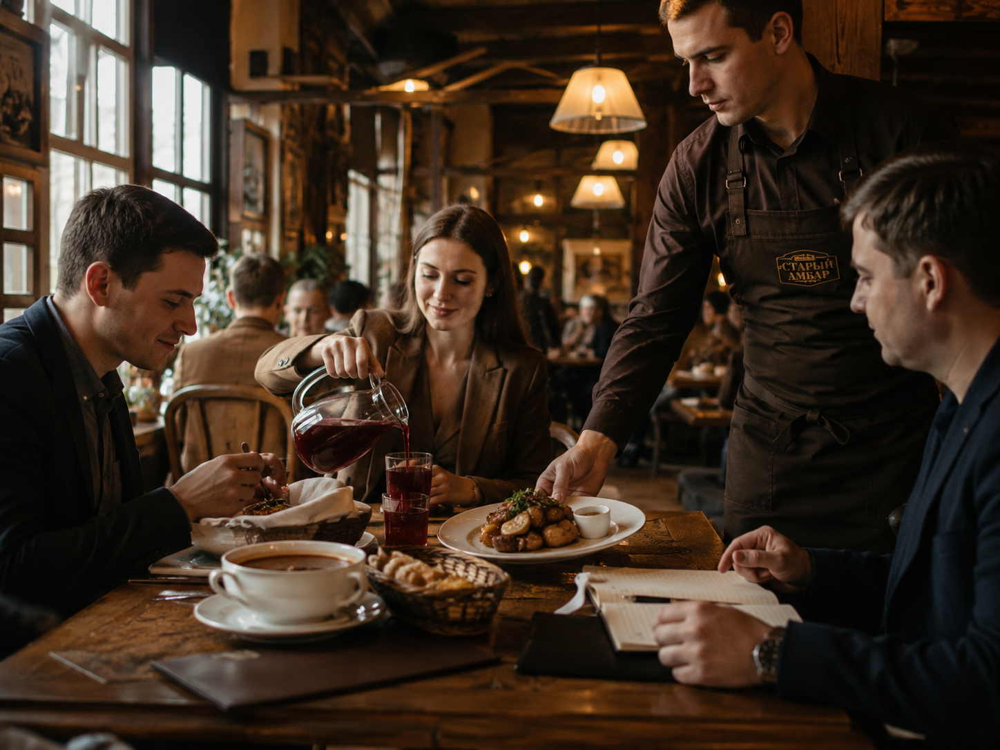
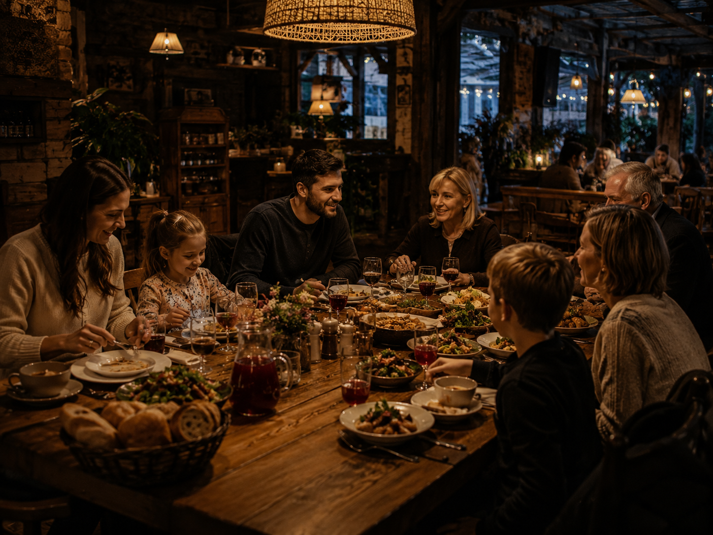
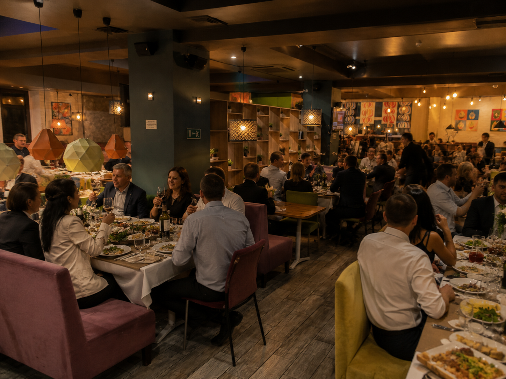
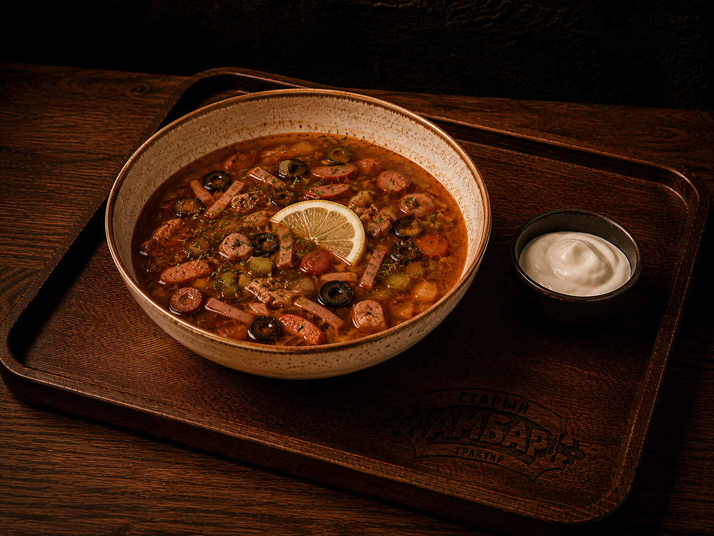
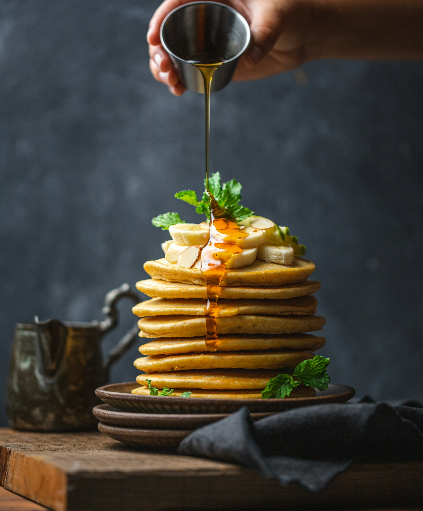
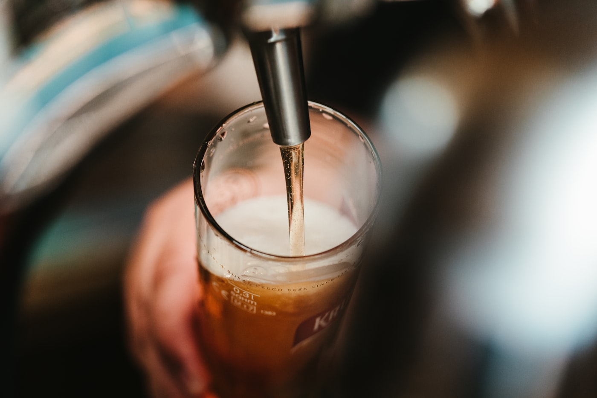
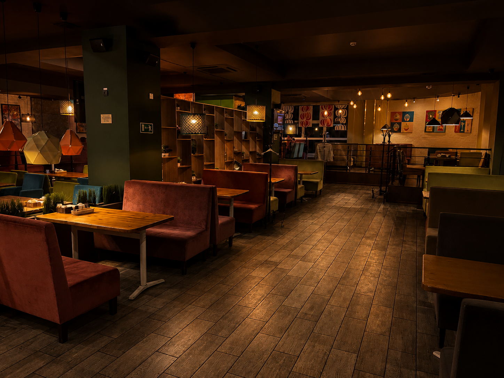
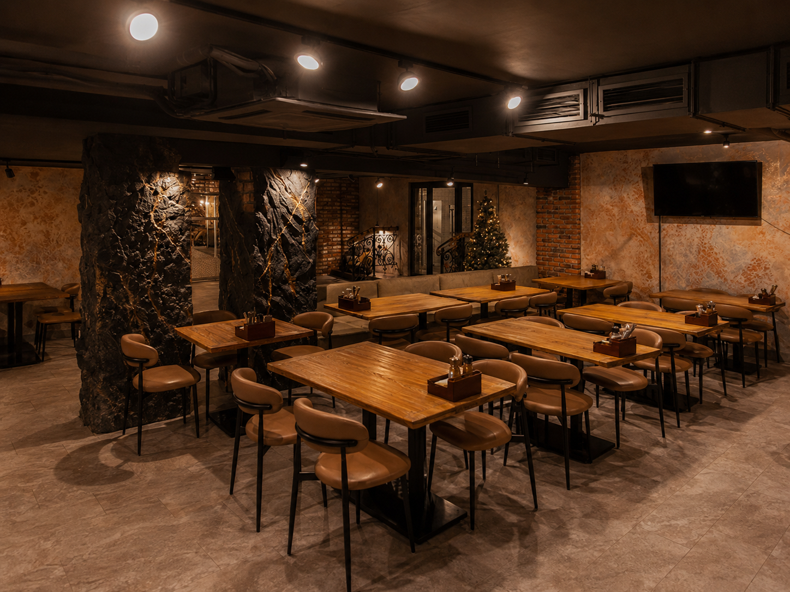
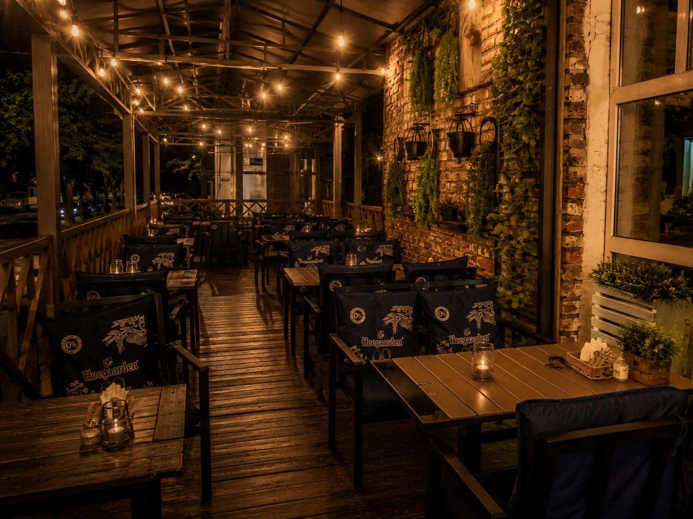

01
Пообедать в будни
Бизнес-ланч от 300 ₽ с 11:00 до 16:00. Первое, второе и компот — успеете за перерыв, наедитесь до вечера.
Ланч-менюНижнекамск · просп. Мира, 18А
Сытно, душевно и по-честному — как дома, только готовить не надо.
Домашняя кухня и своё пиво Банкеты до 300 гостей Ланч от 300 ₽ Детский зал
Атмосфера
Дерево и камень, сводчатые потолки, самовары и бочки. Здесь не нужно говорить шёпотом — можно просто быть собой: смеяться, поднимать тосты и просить добавки.
Ждём вас сегодня
Забронируйте стол за минуту — и приходите голодными. Об остальном позаботимся мы.
Поводов — четыре
В «Амбар» приходят каждый день — и всегда по-разному. Выберите свой сценарий: раскройте и посмотрите, что мы приготовили.

Бизнес-ланч от 300 ₽ с 11:00 до 16:00. Первое, второе и компот — успеете за перерыв, наедитесь до вечера.
Ланч-меню
Большие столы, детское меню, летняя веранда. Никто не уйдёт голодным — и никто не разорится.
Забронировать стол
Залы от 20 до 300 гостей. Юбилеи, свадьбы, корпоративы — накроем стол, который будут вспоминать.
Рассчитать банкетДетский зал прямо в трактире: дети играют — вы спокойно ужинаете. И детское меню, конечно.
Про детский залХиты кухни
Готовим по традиционным рецептам, большими порциями и из настоящих продуктов. Вот блюда, которые гости заказывают снова и снова.

Маринуем сутки, жарим на углях. Сочный, с дымком — как на даче у лучшего друга.

Как лепила бабушка: тонкое тесто, много мяса. Сметана — в подарок от души.

Густая, с копчёностями и лимоном. Одна тарелка — и жизнь налаживается.

Томим несколько часов — мясо само сходит с кости. Берите на компанию.

Тонкие, кружевные, прямо со сковороды.
Своя пивоварня
Попробуйте — и поймёте, почему постоянные гости заказывают «как обычно, амбарского».

Будни · 11:00–16:00
Не надоест даже за месяц: сегодня борщ и котлеты по-домашнему, завтра — солянка и плов.
Уложитесь в обеденный перерыв — проверено тысячами офисных обедов.
Сытно по-амбарски, а не «офисный перекус». Работаете рядом? Приходите всем отделом — большие столы найдутся всегда.
Банкеты и события
Юбилей, свадьба, корпоратив или выпускной — мы 15 лет накрываем столы для главных событий в жизни нижнекамцев. Проводим и поминальные обеды — деликатно и без лишних хлопот.
Родителям
В «Амбаре» есть собственный детский зал: игровая комната с мягкой зоной и игрушками. Ребёнку — праздник, вам — наконец-то горячее горячим.
Атмосфера



Здесь не нужно разглядывать меню в поисках «чего-нибудь до 500 рублей». Здесь можно просто быть собой: смеяться, поднимать тосты и просить добавки.
Спецпредложения
Скидка всю неделю до и после дня рождения. Праздник должен быть выгодным!
С 15:00 до 18:00 — скидка на всё фирменное пиво. Лучшее время попробовать «амбарское».
По выходным в детском зале работают аниматоры — приходите всей семьёй, дети точно не заскучают.
Гости говорят
«Приезжаем всей семьёй каждые выходные. Дети играют в детском зале, а мы наконец-то спокойно едим рульку. По деньгам — как в столовой, по вкусу — как у мамы.»
«Заказывали юбилей на 90 человек. Всё организовали под ключ, гости до сих пор вспоминают стол. Отдельное спасибо за то, что уложились в бюджет.»
«Обедаю здесь почти каждый будний день — ланч подают быстро, меню не повторяется, и после него реально не хочется обратно в офис.»
Рейтинг 4,3 и 634 живых отзыва на Яндекс.Картах — мы отвечаем на каждый, включая строгие.
Все отзывы на Яндекс.КартахКонтакты
Просп. Мира, 18А,
Нижнекамск
Ежедневно 11:00–01:00,
пт–сб — до 02:00
Бесплатная парковка · Детский зал · Банкетный зал до 300 гостей
Да — нажмите «Забронировать стол», выберите дату и время. Подтверждение придёт в течение 5 минут. Или просто позвоните — ответим сразу.
Отдельного детского меню нет, но в основном меню найдутся позиции для маленьких гостей. А детская комната есть: оставьте там ребёнка поиграть, пока сами спокойно едите.
Банкетное меню — от 1 500 ₽ на человека, аренда зала при заказе банкета бесплатна. Оставьте заявку — рассчитаем точную смету за 15 минут.
В будни и воскресенье — до 00:00, в пятницу и субботу — до 02:00. Кухня закрывается за час до закрытия заведения.
Да, у трактира на просп. Мира, 18А — бесплатная парковка для гостей.
Бронь стола
Забронируйте стол за минуту — и приходите голодными. Об остальном позаботимся мы.
Подтвердим бронь звонком или сообщением в течение 5 минут.
Подтвердим её звонком в течение 5 минут. До встречи в «Амбаре»!
Или по старинке — одним звонком: +7 917 890-91-21